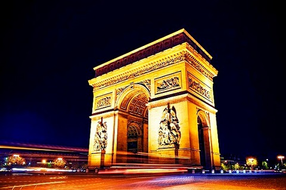
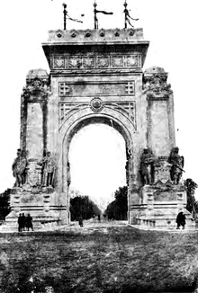

Obiective Culturale București
Arcul de Triumf
Arcul de Triumf este un monument situat în partea de nord a Bucureștiului, în sectorul 1, la intersecția șoselei Kiseleff cu bulevardele Constantin Prezan, Alexandru Averescu și Alexandru Constantinescu. Monumentul, proiectat de Petre Antonescu, a fost construit în perioada 1921-1922, renovat în perioada 1935-1936, și din nou renovat începând din 2014. El comemorează victoria României în Primul Război Mondial.
Arcul de Triumf are 27 m înălțime, cu o singură deschidere și este de formă paralelipipedică. Machetele au fost executate de artiști plastici, iar pentru cioplirea marmurei de Rușchița, pe lângă sculptorii autohtoni, s-a apelat și la un număr de zece sculptori din Italia.
Semnificație
Împreună cu Catedrala Încoronării din Alba Iulia, cu Mausoleul de la Mărășești, cu Crucea Eroilor Neamului de pe muntele Caraiman, Mausoleul din Parcul Carol și cu Mormântul Eroului Necunoscut din Parcul Carol, Arcul de Triumf se numără printre monumentele care comemorează participarea României la Primul Război Mondial de partea Aliaților, la finalul căruia aproape toate teritoriile locuite de români s-au găsit pentru prima dată reunite la un loc. Arcul de Triumf nu este primul monument de acest gen ridicat în capitala României, el fiind precedat de câteva construcții provizorii cu semnificații asemănătoare, care au marcat, succesiv, victoria României în războiul de independență (1878), jubileul celor 40 de ani de domnie ai regelui Carol I (1906) și revenirea familiei regale române din exilul de la Iași (1918).
Istoric
În București au mai fost ridicate și alte arcuri de triumf, cu existență temporară, în 1848, 1859, 1878, 1906 și 1918, dar după primul război mondial s-a luat decizia construirii unui monument cu caracter permanent.[5] În 1922, în timpul mandatului primarului Bucureștiului Matei Gh. Corbescu (februarie 1922 - decembrie 1922), la București s-a organizat o paradă în cinstea Marii Uniri. Deoarece Arcul de Triumf din 1918 fusese construit dintr-un material care nu rezista ploilor, primarul Matei Gh. Corbescu a venit cu propunerea să fie ridicat ca un nou Arc de Triumf, din lemn, până când se vor găsi bani de unul impunător. A fost criticat pentru inițiativa sa, iar George Enescu i-a scris atunci primarului: „Dar adevăratul Arc de Triumf, pe când?” Prin urmare, în 1922, în contextul încoronării regelui Ferdinand I și a reginei Maria ca suverani ai României Mari, comisia pentru organizarea serbărilor încoronării a apelat la serviciile arhitectului Petre Antonescu pentru ridicarea unui impunător Arc de Triumf în zona nordică a capitalei, pe șoseaua Kiseleff. Din cauza timpului scurt însă, doar scheletul construcției a fost turnat în beton armat, minunatele basoreliefuri exterioare fiind realizate din ipsos, ceea ce a determinat – odată încheiate serbările încoronării (în 16 octombrie 1922, când s-a organizat un spectacol, evocând lupta poporului român pentru unitate statală, la festivități participând reprezentanți din peste 20 de state europene, din Statele Unite ale Americii și Japonia, fapt ce a semnificat o largă recunoaștere internațională a noii realități naționale statale) – o degradare progresivă,cauzată de intemperii, a aspectului exterior al Arcului de Triumf, acesta ajungând la începutul anilor 1930 un „monument incomod” pentru imaginea „Micului Paris” interbelic.
De-abia în 1932, în urma unui articol al lui Mihai Mora intitulat sugestiv „O datorie imperioasă”, situația deplorabilă a Arcului de Triumf revine în atenția opiniei publice, decizându-se nu demolarea monumentului construit în 1922, așa cum ceruseră unele personalități, ci înlocuirea basoreliefurilor din stuc de pe acesta cu unele definitive, din piatră sau marmură de Rușchița. De data aceasta, autorul, același Petre Antonescu, a dat edificiului o notă mult mai sobră în ceea ce privește finisajul exterior, cerând artiștilor pe care i-a cooptat la lucrări să se încadreze în această nouă manieră de lucru. Printre artiștii care au lucrat la finisaj se numără Constantin Baraschi, Alexandru Călinescu, Mac Constantinescu, Ion Jalea, Dimitrie Paciurea și Costin Petrescu, toți nume cunoscute în perioada interbelică. Pe fațada sudică, sculptorii Mac Constantinescu și Constantin Baraschi au dăltuit fiecare câte o reprezentare simbolică a Victoriei. Amplasate identic pe fațada de nord se găsesc alegoriile Bărbăție de Ion Jalea și Credință de Constantin Baraschi, precum și alte două Victorii create de Cornel Medrea și Dimitrie Onofrei. Lucrările decorative de la vechiul Arc de Triumf, realizate în 1922 de sculptorul Dumitru Mățăoanu, nu au mai fost folosite la refacerea definitivă a Arcului de Triumf. Vedere dinspre parcul Herăstrău Populația, și cu precădere numeroasele asociații și societăți ale foștilor combatanți din primul război mondial, a contribuit cu peste 7 milioane de lei la edificarea Arcului de Triumf, răspunzând cu promptitudine subscripțiilor lansate în cursul anului 1935 de Ministerul Apărării Naționale. Odată adunate sumele necesare, anul 1936 a fost consacrat integral definitivării monumentului, care a fost construit din granit de Deva, în stil clasic, după modelul marelui Arc de Triumf de la Paris. Forma sa este aceea a unui paralelipiped, având o temelie de 25 × 11,5m și o înălțime de 27m. Monumentul are o înălțime de 11m, o lățime de 9,5m și o boltă. Stâlpii, pe care se sprijină monumentul au scări interioare, care duc spre terasa acestuia[11]. Arhitectul Victor G. Ștefănescu a fost însărcinat cu controlul tehnic și administrativ al lucrărilor, care au început în aprilie 1935 și au durat un an și jumătate. Ceremonia inaugurării a avut loc la 1 decembrie 1936, când se împlineau 18 ani de la Unirea Transilvaniei cu România. Momentul a fost marcat de participarea regelui Carol al II-lea, a mamei sale, regina Maria, a prințului moștenitor Mihai, a membrilor guvernului României și a numeroși invitați de onoare din țară și din străinătate.